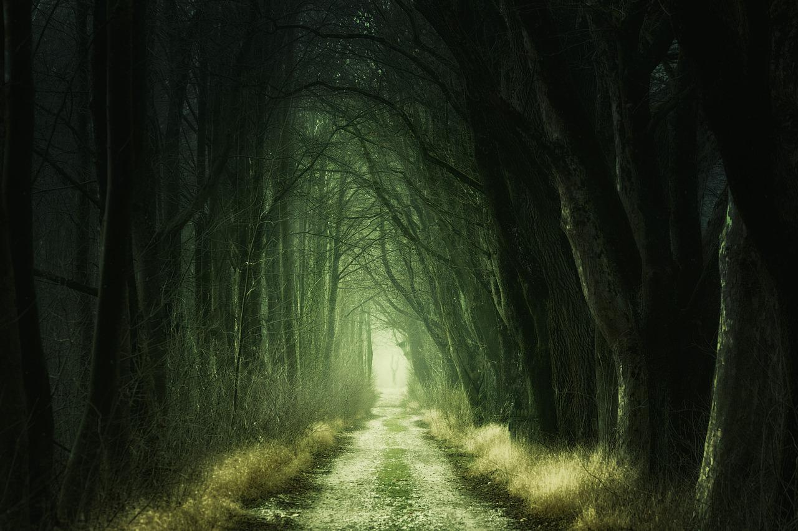

Waterslide Corp.® |
Home | Fale Conosco |
|  | |
Trilha Lovecraftiana
Enfrente os horrores cósmicos além da nossa
compreensão na nossa mais nova atração, a
Trilha Lovecraftiana, um caminho pela maior floresta
Pegue seu equipamento de exploração e prepare-se para uma trilha aterrorizante, onde suas decisões definem onde você irá parar e o que encontrará no caminho. Atrações temáticas incluem:
O que você está esperando? Adentre o mistério! Devido às possíveis consequências apocalípticas da atração, é necessário passar por um treinamento de 18 meses e realizar 9 testes avaliativos antes de realizar a trilha. Além disto, Waterslide Corp.® não garante a sua segurança nem a de seus familiares ao entrar na floresta, e não se responsabiliza por quaisquer danos decorridos da interação com a mesma. |
|